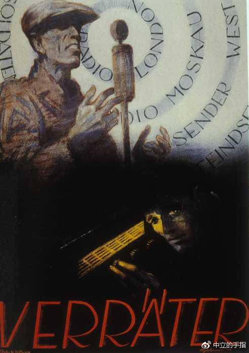
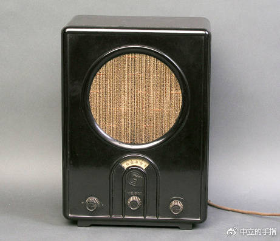
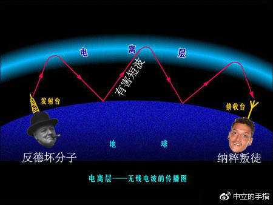
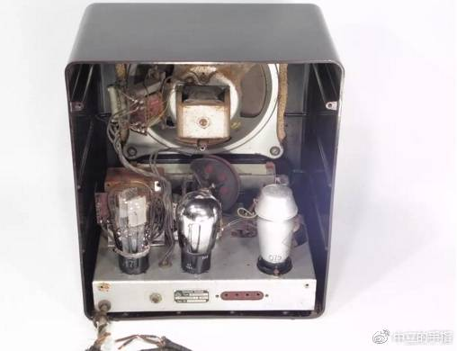
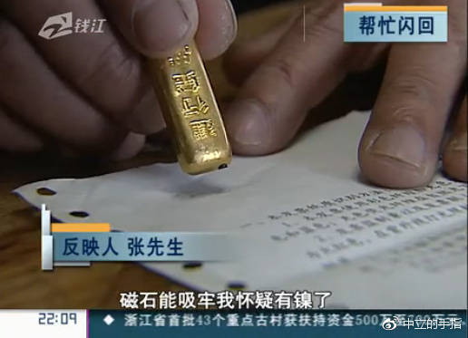
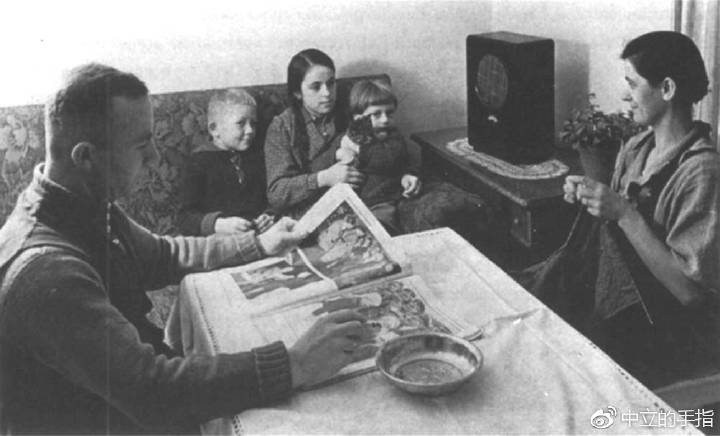
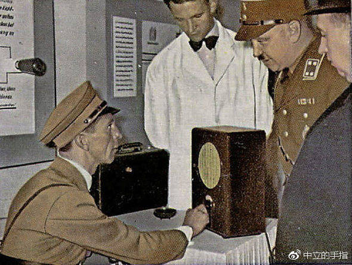

纳粹心灵控制器——Volksempfänger的黑历史
为了替德国人民屏蔽境外不良信息，纳粹殚精竭虑。
多年以后，当元首站在欢呼的人群面前，准会想起1918年10月那个遥远的上午。那时这位德国下士正惊恐地趴在前线厕所的屎坑边，目睹了此前战争中从未有过的景象——英国人打来的炮弹里竟然没有炸药，而是装载着一叠叠传单。等到惊魂未定的下士随手抓起一张擦腚时，才发现这擦屁股纸上的内容是如此令人震惊：原来战局远不像己方宣传的那样美好，美国百万大军参战，德军大溃败！可惜这位下士尚未震惊完毕就被一颗毒气弹送进了后方医院，告别了自己的一战生涯。
十多年过去，当年拉屎的下士成长为纳粹德国的最高领袖阿道夫·希特勒，但五彩斑斓的传单在蓝天白云下肆意飞舞的那天，已成为这位前艺术家脑海中挥之不去的浪漫。作为有史以来第一场宣传战的亲历者，希特勒深刻的明白宣传在斗争中的重要意义，并将控制民众思想作为纳粹党最重要的政治任务，这也让国民教育与宣传部部长约瑟夫·戈培尔的工作显得尤为重要。
伟大元首希特勒的亲密战友戈培尔同志
杰出的垄断资产阶级革命家、德国纳粹党的优秀党员、久经考验的忠诚的国家社会主义战士、第三帝国宣传战线的卓越领导者，约瑟夫·戈培尔曾对宣传工作下达过一系列重要指示，包括“大众传播媒介只能是党的工具”、“最好的宣传就是让被操纵者相信那是他们的自由意志”，以及著名的“即使是一个简单的谎言,一旦你开始说了,就要说到底。”也就是所谓的人民知道他们在撒谎，他们也知道人民知道他们在撒谎，人民也知道其实他们知道人民知道他们在撒谎……总之谎言重复千遍就成了真理，等到群众被忽悠的纷纷点头称是，再把剩下的那点死硬份子仍进集中营，万众一心的大好局面就开拓成功了。
这个家伙就被属于扔进集中营的死硬份子之一
尽管纳粹的宣传套路日后被证明为屡试不爽，但有一个重要的前提就是切不可让人民知道真相是什么。因为真相“会损害国家的威望，为英法等西方国家提供攻击德国的口实。”但纳粹的问题在于其所处的时代实乃三千年未有之大变局，各种科技发明让整个世界日新月异，电报、电话、收音机等新玩意的出现把信息传递变得前所未有的快捷。
啊我亲爱的90后朋友们，收音机不是你的智能手机里那个从来用不上的app，而是历史上真实存在过的玩意——大概就是一个方方正正的盒子，可以接收并播放空气中无处不在的广播讯息。来90后的朋友们开开眼，下图这个东西就是收音机↓↓↓↓↓↓↓↓↓
可能是收音机。用心聆听。
作为第一个将现代科技运用于政治宣传的洗脑家，戈培尔敏锐的认识到了收音机对于纳粹宣传的巨大潜力。如果把此档神器送进千家万户，让每一个德国人早上起床就沐浴在元首讲话的春风中，那么真理（纳粹版）的普及速度必然大大提升。
想法不错，但是有两个大问题。第一是当时的收音机实在是太贵了，普遍售价在200至500马克不等，而德国工人的月平均工资是70马克。加上德国人普遍务实，对待收音机缺乏我国屌丝对待iPhone那种割肾也要买的热情，所以收音机在德国长期难以全面普及。
第二个麻烦看上去要棘手点。虽然纳粹在德国上管天下管地中间管空气，但无线电波既没有实体也没有国界更不用牵网线，几乎不可能屏蔽，这就极大的增加了纳粹党阻断人民获取外界信息的难度。自从有了收音机，思想控制就不再是盖世太保挨家挨户搜剿违法小册子那么简单的事了。
“叛徒！”
这张略带哥特风格的海报传达了纳粹对于无线电广播的基本态度。黑暗的角落中，一个长得像厄齐尔的吊眼瘪三正在偷听境外广播，演讲者带着标准的布尔什维克式前进帽，把斗争矛头明显指向东方的苏俄集团。海报下方有一个大大的德语单词：叛徒（Verräter）！无时无刻提醒着德国人民在纳粹统治下收听外国广播是极其严重的犯罪行为。
怎么办，好替纳粹着急！怎样才能为人民群众屏蔽掉境外不良信息呢？
面对这种小民不听管教的局面，普通独裁者可能会想出把收音机一禁了之的封堵政策，但戈培尔比后世那些只会搞一刀切的蠢货们不知道高到哪里去了。虽然他没能沿着国境造堵屏蔽墙拦住无线电波，但纳粹的行事作风向来是解决不了问题，就解决提出问题的人；如果解决不了提出问题的人，那就解决制造问题的机器。
戈培尔明白虽然科学是他妈的双刃剑，比如收音机既可以用来进行纳粹宣传又能收听境外广播。但如果我本身就是铸剑人的话，还要双面开刃不就是傻逼吗？既然你们爱用收音机听外国电台，那把德国的收音机都设计成不能收听外国频道不就行了。于是在戈培尔的亲自坐镇下，纳粹开启了人类历史上第一次大规模的科学洗脑计划——Volksempfänger工程。
见Volksempfänger就如见元首
作为一个纳粹新造语，Volksempfänger由“人民（Volk）”和“接收机（empfänger）”两个德语单词组成，全称就是“人民接收机”。总所周知纳粹有个非常不好的臭毛病就是一边骑在人民脖子上一边还要标榜自己“人民政权”的身份，喜欢往啥玩意前面都加上“人民(Volk)"俩字，包括专业判你死刑的“人民法院”（Volksgerichtshof），专业送你去死的“人民冲锋队”（Volkssturms），以及专业骗劳动人民血汗钱的“人民汽车”（Volkswagen，在我国叫大众汽车）[注1]。此外还有“人民阵线（Volksliste）”、“人民银行（Volksbank）”等不一而足。总之在纳粹德国“人民”俩字基本就是特权的象征，牌子上刻着“人民”的单位那都不是普通人民能进的地方，硬要往里凑保不准就会冒出几个冲锋队员打的你头破血流。
这里是纳粹人民法院，通通死刑！
但是人民接收机不同，这是纳粹为数不多的真心希望所有人民都能拥有的玩意。为了让每个德国人都能听到元首的讲话，戈培尔对人民接收机的造价下达了死命令：不得超出德国人平均月工资70马克。
科隆大学教授瓦尔特·克斯廷（Walter Kersting）设计了初代的人民接收机，并由戈培尔拍板，用希特勒上台的1933年3月1日将其定名为VE-301，可见纳粹对人民接收机寄予何等厚望。
作为一部彻底贯彻了纳粹精神的洗脑机，VE-301有一个粗制滥造的纳粹外壳和三个纳粹旋钮，最重要的电子原件是三根纳粹电子管。它被涂上了冷酷的纳粹黑，一个大型的纳粹喇叭几乎占据了整个收音机的正面空间，用来在丝丝作响的纳粹杂音中将元首的讲话声放大到极限。
初代脑波控制机VE-301
为了尽可能的压缩成本，VE-301摒弃了以往收音机雕龙画凤的装饰外壳，内部原件也出奇的简单，所有的目标都是在70马克的造价内凑出一台能响就行的洗脑盒子。当时许多高品质的收音机拥有六跟以上的电子管，用以提供更好的接收效果，但是人民收音机不需要。怎么能出声还不满足啊，还想不想要低音澎湃，中频饱满，高频通透？70马克的人民接收机不是送给你们玩HIFI的，能听见清楚领袖讲话就是合格品。
为了防止人民偷听敌台，人民接收机没有短波功能，从而将这玩意接收范围控制在相当短的距离内，免得你们接收境外不良信息。中学从来不听讲的混混们都看过来，这里重新为你们解释一下，无线电根据其波长不同而划分出了长波、中波和短波，波长越短则越容易被地面和大气电离层反弹，所以短波传播的最远。用你们这些混混能听懂的俗话讲，就是我日你妈哟中长波都穿透电离层跑掉了，叼你老母哦别有用心的短波却在电离层和地面之间一路反弹，带着外国反动势力的宣传偷偷渗入了德国，他妈的再问信不信砍死你？
短波传播原理图（图中人物为示意）
VE301不但被阉割了短波功能，能收听的电台也被固定为几个根正苗红的纳粹频道。所以这玩意根本不能算是一台可以用来娱乐的收音机，只能算纳粹放进你家的洗脑工具，把VE-301叫做“人民接收机”而不是“人民收音机”是不无道理的。
VE301的内部构造。右侧印有“德律风根”logo的电子管非常醒目
三家主要的电子厂参与了人民接收机的制造工作，包括蓝宝（Blaupunkt）、斯贝（Seibt）以及德律风根（Telefunken）。对就是那个让HIFI老烧们听名字就浑身哆嗦的胆界精英德律风根，想当年我还是个穷骨头发闷骚的傻烧，省吃俭用从牙缝里抠出一对德律风根EL34电子管装机听瓦格纳，可是翻来覆去都觉得有股葛洲坝的土味儿。直到去德国朋友家做客，用同样的设备听同样的碟才恍然大悟——没有莱茵河水电站输送的纯正德意志交流电，听到人爆肝机爆胆也听不出《尼伯龙根指环》里那如假包换的24K莱茵的黄金，最多能听出几根出放三个月就生锈的中国建设银行金条。
建行金条，品质保证，磁铁可验，你值得拥有
HIFI讲究的是个原汁原味，比如听贝多芬就要用德国电，听柴可夫斯基当然要用俄国电，听霍洛维茨必须去切尔诺贝利的水泥壳子上打洞偷电，连这点最起码的HIFI素养都没有还好意思说自己是烧友？在此严正奉劝我国的HIFI伪烧们悬崖勒马，中国人就是埋头苦干的命，天生没福气享受这些西方舶来的精神毒品。
不好意思偏题了，其实我想说的是当年的纳粹就和心胸狭窄的本人差不多，认为德国人也是没福气沾染那些外国精神毒品的。换句话说，天天听最高领袖的讲话就是诸位最大的福音，你们就不用再殚精竭虑收听外国的广播节目了。
“爸爸是聋子，爸爸只能看报纸”
作为一台无线电设备，VE-301是残缺的，悲剧的，不但被阉割了收音功能，甚至连收音机的命根子——天线也被纳粹一刀切掉了。当别的收音机竖起雄风满满的小天线接收远方的诱惑电波时，VE-301只能在阴暗处咬牙切齿的抓挠自己胯下的伤口。身体的残缺造就了VE-301扭曲变态的性格，它最终心甘情愿的堕落为纳粹皇帝希特勒的权力传声筒。当太监当久了就有了自豪感，古往今来的奴才们都一样。
来来来75马克你买不了吃亏，也买不了上当，1933年只有四分之一的德国家庭拥有收音机，到了1941年三分之二的家庭都拥有了人民接收机。毕竟这玩意实在是太便宜了，你总不能一边把新技术变成政权的宣传工具，一边还要收取昂贵的无线电带宽费用，对吧？戈培尔的计划成功了，数百万台驻扎在卧室里的太监在老百姓头脑里筑牢了一堵无形的防火墙，再也没有什么能阻止纳粹扼杀思想与言论自由了。
“戈培尔先生，不能调频的啦，这几个旋钮只是装饰啦”
在听腻了天天歌颂领袖的纳粹官方频道后，墙内的老百姓终于发现原来便宜货才最坑人，这个国家沾上“人民”俩字果然就没好事。人们把这个呱呱乱叫的东西厌恶的称作“戈培尔的嘴”，虽然这张嘴总是发出希特勒的声音。
可惜希特勒是元首又不是主播，不可能一天24小时都坐在话筒前陪你们唠纳粹嗑，所以纳粹电台也会播放一些副元首鲁道夫·赫斯或者戈培尔的讲话，当然还有套路满满的纳粹新闻，内容基本上就是千篇一律的元首很忙、德国人民很幸福、以及国外人民水深火热。不过纳粹也没有料到元首的法定继承人鲁道夫·赫斯会在1941年5月开飞机跑去了英国，之后人民收音机里基本上就只剩下元首讲话和一路胜利的纳粹新闻了。
老铁双击666，转发本文为咱们元首续一秒！
我记性不好，副统帅在权力斗争失败后架机出逃敌国，历史上好像就这么一回？反正这种事搁在哪都足以动摇一国之本，只是苦于没法接触外界报导，老百姓只能蹲在人民收音机前听听官方怎么说。于是在德国通讯社的通稿中，昨天还是纳粹副元首的赫斯今天就变成了“精神错乱的理想主义者，充满了第一次世界大战中负伤而造成的幻觉”——有了人民接收机，这位副元首顺利的被精神病，他的出走也被纳粹轻描淡写的掩盖过去了。
身为纳粹头号大喷子，人民接收机在短命的存在时间里喷出了自己的一片天地。德国儿童在人民接收机的播音和纳粹政治课本中成长，从小接受少年团——青年团——纳粹党的三重滚筒式洗涤，长大后自然是一个除了纳粹思想外头脑一干二净的合格党员了。
这样的成长环境让德国少年展现出极度的爱国心，准确的说应该叫爱纳粹之心，因为他们很难认识到政党和国家的区别。小家伙们认为对纳粹党的批评就是乳德，就是伤害他们的日耳曼自尊。比如有一个叫托马斯·潘恩的美国人说过，“爱国者的责任是保护国家不受政府侵犯”，纳粹小将们一听就不乐意了，谁说德国被侵犯了？本国的人权状况乃全世界最佳，没看见咱们能自由的开关人民接收机吗？你你你，说的就是你爱因斯坦，嫌德国不好滚去美国啊，反正大西洋又没加盖！
“看见祖国这么流氓我就放心了”
可是花75马克买个收音机却只能收听纳粹国家广播电台，就像如今的法国人民花大价钱买了辆汽车却被限行（哈哈哈好苦逼）或者伊朗人民千辛万苦装了跟网线却不能上外网（哈哈哈更苦逼）一样，虽然是件为国家省心的好事儿，但总有些坏分子想方设法从里面找空子 。
如果说拥有长城的中国人是最善于造墙的民族，那么德国人肯定是最善于翻墙的民族，这一点在他们几十年后翻柏林墙的本事上也看的出来——在长期的生活实践中，德国人民发明了大量突破纳粹无线电管制的办法。最常见的就是为人民收音机改装调频功能，或者加装接收能力更强的天线，还有人改造出了可以用耳机的版本，以免警惕的邻居听到动静向盖世太保举报。
今天你翻墙了吗？
随着私自改装接收机的情况越来越多，纳粹开始不乐意了。好不容易才建了堵墙为你们屏蔽外界不良信息，你们这些刁民不但不领情还天天想着翻墙，这还了得！人民要是清醒了，元首的德意志复兴之梦还怎么做？面对严峻的国内舆论形势，纳粹发出警告，私自改装人民接收机以及架设天线用来提供翻墙服务均属于违法行为，尔等刁民不傻我纳粹也不是白痴，我们就是要不择手段的封。
别想着调频哦，调频判死刑的哦
纳粹的警告从来都不是口头上的威胁。从1939年至1942年，共有2704起偷听敌台的行为被定罪，具体被处决的人数现在已经不得而知。
然而在纳粹的高压之下，依然有超过20万的德国人努力收听到了外国广播。在柏林的每个夜晚，都有尚且清醒的人坐在改装过的人民收音机前，听见外界传来的宝贵信息——或许是被纳粹视为靡靡之音的爵士乐，或许是中央集团军群在白俄罗斯被苏军洪水般席卷的大溃败，或许是爱因斯坦将纳粹比作是“抢劫犯，杀人犯、国家社会主义骗子”的谴责，又或许是托马斯·曼认为纳粹德国是“灭绝人性、白痴训练营、牲口国家”之类的咒骂。
老话说得好，你可以一时欺骗所有人,或永远欺骗某些人,但不可能永远欺骗所有人。当元首的军队在新闻中取得了一个又一个的光荣胜利，战线却从莫斯科一路退到奥德河时；当纳粹的经济建设在人民收音机的播报里连年增长，可是买一袋面粉都要排队时，即使谎言仍在重复，人民群众也能从切身感受中了解到发生了什么。
只有人民接收机，这个被数百万德国民众在起居室里日夜咒骂的太监，仍在在吱吱作响中表达着自己对纳粹的忠诚——即使是在苏军兵临柏林的前夜，它还在不停地高喊“将入侵者消灭在第三帝国首都坚不可摧的城墙下”。可惜的是，纳粹嘶吼出的那道“坚不可摧的城墙”，就和人民接收机砌出的那道无形的墙一样，在关键时刻是如此的弱不禁风。
于是乎啊，眼看他起高墙，眼看他拒宾客，眼看他墙塌了——这堵诞生于特定时间的特殊的无形之墙，最终崩塌为压在纳粹坟头上的一堆瓦砾。一共也就是一二十年。
是墙总会倒的，几十年后的德国再次证明了
iiiiiiiiii
后记
1598年，一艘被暴风雨吹偏了航线的商船停泊在印度洋上的某个小岛边。饥肠辘辘的水手们发现，岛上有无数肥硕的大鸟正昂首挺胸的来回踱步，仿佛它们是骄傲的世界之王。这座小岛叫毛里求斯，这种鸟叫渡渡鸟。
在数百万年远离大陆的生活中，缺少天敌的渡渡鸟进化（或者说是退化）成了一种不会飞却毫无畏惧的生物，即使又笨又蠢依然能在岛上称霸多年，远不知外界的生存竞争已经演化到何等激烈的程度。在人类移民者以及随船而来的猫、狗等捕食者的联合冲击下，渡渡鸟在被人类发现后的几十年里迅速灭绝。
如果一座孤岛在长年累月的封闭中会孵化出渡渡鸟这种自大而蒙昧的生物，那么一个国家通过造墙术将自己与世界进行文化隔绝，会不会也变异成在文化孤岛中沉迷于自己虚幻的强大，面对外界信息却弱不禁风的渡渡鸟？就像，就像，就像那个，那个闭关锁国的清朝一样呢？

什么？我大渡渡鸟亡了?
哎呀你问我我问谁嘛。
[注1]1933年，希特勒下令生产廉价的平民轿车，即“甲壳虫”，并亲自命名新车的制造厂为“大众汽车工厂(Volkswagen Plant）。在收取了德国民众的大量定金后，战争爆发，甲壳虫汽车的生产也就不了了之。
中立的手指
关注61粉丝3937

简介：煎蛋网编，宅男编剧，程序员退役。喜欢收集奇怪的东西
评论
推荐阅读
第一卷第三十六章 被牵着鼻子走的鲍曼
雨打梧桐摇月影
第二纪：国家工业体系理论与道路自信
花千芳

美国呼吁中国不要搞军备科技封锁，军迷无语，表示是不是用错词了
北京时间
古代女子为什么要缠足 缠足和性有什么关系
热门 趣历史
【芝麻简史】挖鼻屎没你想的那么容易
橘子娱乐
还原真实的格瓦拉，你还会崇拜他吗？
搜狐网
清朝末代皇后生活：婉容夜间就寝不掩门？孙耀庭揭示原因
热门 北京时间
聊聊《风起云涌2：越南》成就背面的那些梗（一）
机核网
请不要辜负这个时代
后会无期0509